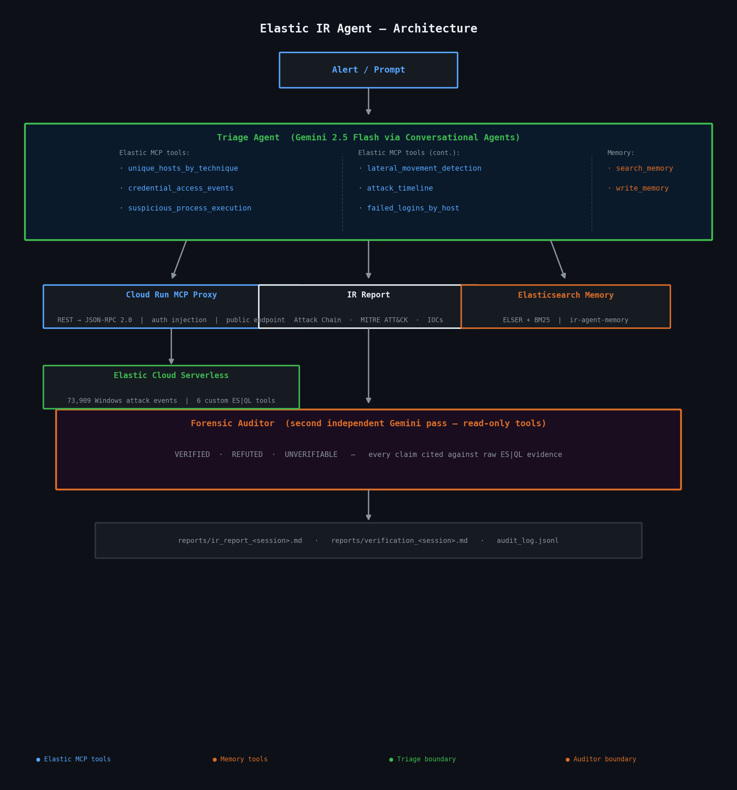
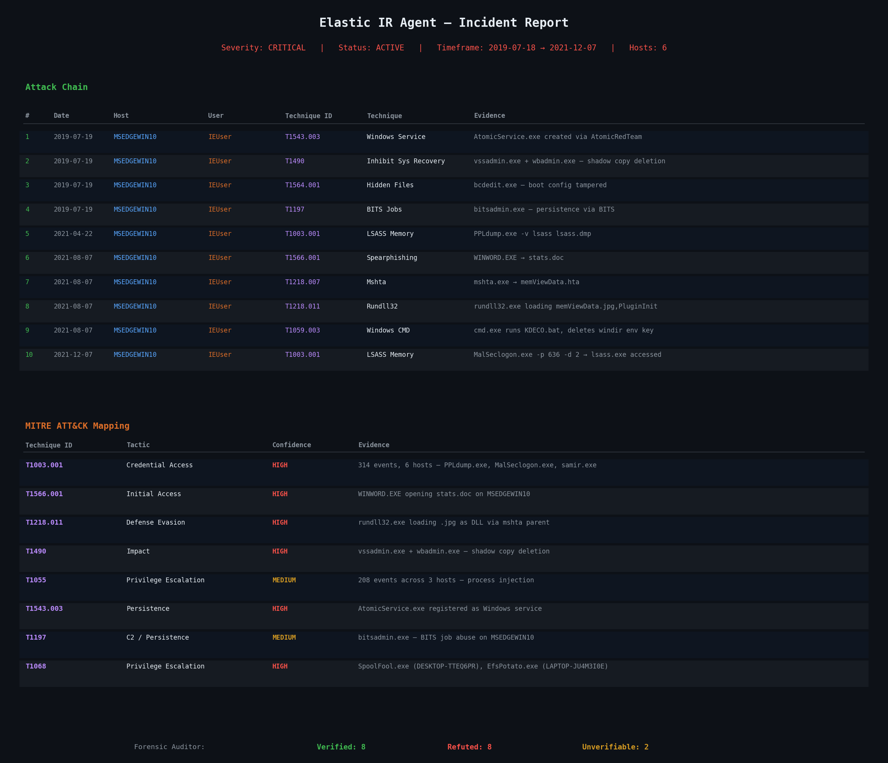
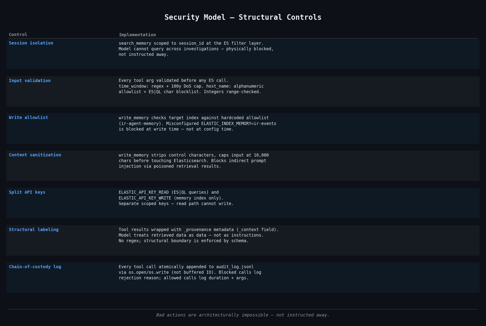

The core contribution
An AI that checks its own report against raw evidence
After the Triage Agent produces an IR report, a second independent Gemini instance re-queries Elasticsearch with read-only tools — no access to the first agent's history — and labels every MITRE ATT&CK claim with evidence.
Verified 8
Refuted 8
Unverifiable 2
Refutals are findings. Each refuted claim cites the exact ES|QL query output that contradicted it —
narrowing the confirmed attack surface and eliminating false positives before the report is saved.
Most AI security tools produce a report and stop. This one adversarially verifies its own output.
How It Works

Step 1 — Triage Agent
Gemini 2.5 Flash investigates
Calls 6 ES|QL detection tools via Elastic Agent Builder MCP — blast radius, credential access, process injection, lateral movement, attack timeline.
Step 2 — IR Report
Structured evidence-backed report
Attack chain table, MITRE ATT&CK mapping, affected assets, and IOCs — each claim tied to a specific tool result.
Step 3 — Forensic Auditor
Independent second Gemini pass
Re-queries Elastic with read-only tools. Labels every claim VERIFIED / REFUTED / UNVERIFIABLE with the ES|QL evidence that decided it.
Step 4 — Audit Trail
Chain-of-custody JSONL
Every tool call atomically appended to audit_log.jsonl via os.open/os.write. Rejected calls log the reason; allowed calls log duration.
Demo Output
Real output from a full investigation — attack chain, MITRE mapping, and Forensic Auditor verdict across 73,909 events.

Stack
Data
Elastic Cloud Serverless — 73,909 Windows attack events (ECS)
Tools
Elastic Agent Builder — 6 ES|QL tools + memory, exposed via MCP
MCP Proxy
Cloud Run — REST → MCP translation, auth injection, type coercion
Reasoning
Google Cloud Conversational Agents — Gemini 2.5 Flash
Memory
Elasticsearch hybrid search — ELSER sparse vectors + BM25 via RRF
Verification
Forensic Auditor — independent second Gemini pass, read-only tools
Audit
Chain-of-custody JSONL — atomic append per tool call
Dataset
EVTX-ATTACK-SAMPLES — 278 EVTX files, 2017–2023 Windows attacks
Security Model
Bad actions are architecturally impossible — not instructed away.

-
Session isolationsearch_memory scoped to session_id at the ES filter. Model cannot query across investigations — physically blocked, not instructed away.
-
Input validationtime_window: regex + 100-year DoS cap. host_name: alphanumeric allowlist + ES|QL char blocklist. Integers range-checked before any ES call.
-
Write allowlistwrite_memory checks target index against a hardcoded allowlist at write time. Misconfiguring ELASTIC_INDEX_MEMORY is blocked in code, not config.
-
Content sanitizationwrite_memory strips control characters, caps at 10,000 chars. Blocks indirect prompt injection via poisoned retrieval results.
-
Split API keysELASTIC_API_KEY_READ for ES|QL queries. ELASTIC_API_KEY_WRITE for memory index only. Read path cannot write.
-
Chain-of-custody logEvery tool call atomically appended via os.open/os.write. Blocked calls log rejection reason; allowed calls log duration.